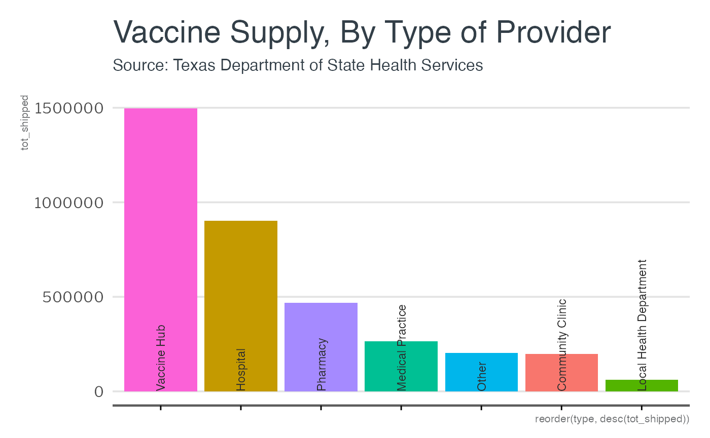

This is a basic example which shows you how to use lbjdata’s ggplot2 theme. First, load the packages:
library(lbjdata)
library(ggplot2)
library(readr)
library(dplyr)
#>
#> Attaching package: 'dplyr'
#> The following objects are masked from 'package:stats':
#>
#> filter, lag
#> The following objects are masked from 'package:base':
#>
#> intersect, setdiff, setequal, union
library(tidyr)Then, import some data:
provider_types <- read_csv("https://genesis.soc.texas.gov/files/accessibility/vaccineprovideraccessibilitydata.csv") %>%
group_by(type = TYPE) %>%
summarise(tot_shipped = sum(Total_Shipped),
tot_avail = sum(VACCINES_AVAILABLE)) %>%
drop_na() %>%
arrange(desc(tot_shipped))Then, draw a chart with ggplot2 and add the theme:
provider_types %>%
ggplot() +
geom_col(aes(x=reorder(type, desc(tot_shipped)),
y = tot_shipped,
fill=type)) +
geom_text(angle=90, color="#2d2d2d", size = 3.1, family = "LibreFranklin-Bold",
aes(y= 0, x=type, label = type), hjust = 0) +
theme_lbj() +
theme(axis.text.x = element_blank()) +
labs(title = "Vaccine Supply, By Type of Provider",
subtitle = "Source: Texas Department of State Health Services")